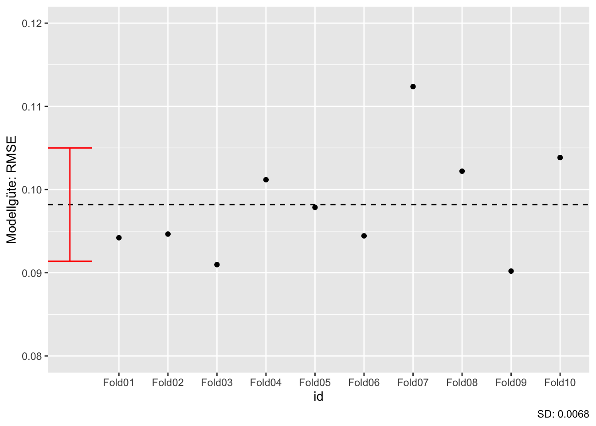
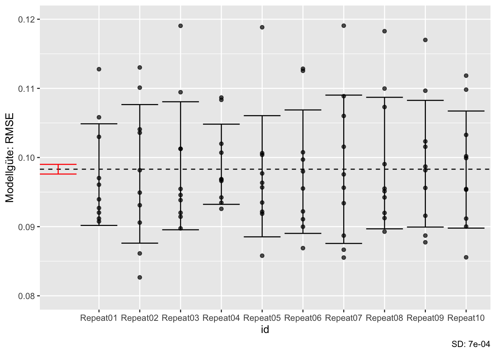

8 Resampling und Tuning
8.1 Lernsteuerung
8.1.1 Lernziele
- Sie verstehen den Nutzen von Resampling und Tuning im maschinellen Nutzen.
- Sie können Methoden des Resampling und Tunings mit Hilfe von Tidymodels anwenden.
8.1.2 Vorbereitung
- Lesen Sie die Literatur.
8.1.3 Literatur
- Rhys, Kap. 3
- TMWR, Kap. 10, 12
8.1.4 Benötigte R-Pakete
8.1.5 Daten
data(ames)8.2 Überblick
8.2.1 Train- und Test-Sample vervielfacht
In Kapitel 4.7 haben wir gelernt, dass ein Modell in einem zweiten Datensatz auf seine Modellgüte hin überprüft werden und sollte und nicht in dem (ersten) Datensatz, in dem die Modellparameter berechnet wurden.
In diesem Kapitel werden wir wir von einem Modell mehrere Varianten berechnen, daher benötigen wir für jeden dieser Varianten oder “Modellkandidaten” eine eigene Train-Test-Aufteilung. Zur Klarheit der Begrifflichkeiten nennt man die resultierenden Teile in dem Fall Analyse- und Assessment-Sample, s. Abbildung 8.1 dargestellt aus Kap. 10.2 in Silge und Kuhn (2022) (Quelle).

8.2.2 Standardablauf
Ein Standardablauf des maschinellen Lernens ist in Abbildung 8.2 dargestellt.
flowchart TD Gesamtdatensatz --> Split[In Train- und Test aufteilen] subgraph Fit[Für jeden Modellkandidaten i] subgraph Kand[Modellkandidat i] F[Fitte im Train-S] --> T[Teste im Assessment-S] end end Split --> Fit Fit --> Best[Bestimmte besten Kandidaten] Best --> lastFit[Fitte ihn im ganzen Train-S] lastFit --> test[Teste im Test-S]
8.2.3 Datensatz aufteilen
Bisher haben wir den Gesamt-Datensatz stets in ein Train- und ein Test-Sample aufgeteilt.
Aber es könnte ja sein, dass die Aufteilung just die “schwer zu vorherzusagenden” Fälle in das Test-Sample befördert. Dann würde sich unser Modell über die Maßen schwer tun und zu schlecht abschneiden. Umgekehrt könnte es ja passieren, dass die “einfach zu vorherzusagenden” Fälle ins Test-Sample wandern, einfach durch die Zufälligkeit der Aufteilung von Train- und Test-Sample.
Eine Lösung, die sich anbietet, lautet, die Train-Test-Aufteilung ein paar Mal durchzuführen, und sich dann mit dem Mittelwert der Modellgüte zu begnügen. Voilà: Resampling!
8.2.4 Resampling
Resampling ist eine Verallgemeinerung des einfachen Aufteilens in Train- und Test-Sample. Im Kern wird aus dem Datensatz mehrere Stichproben durch wiederholtes Ziehen gezogen. Durch Resampling kann die Modellgüte besser bestimmt werden als durch einfaches Train-Test-Aufteilen.\(\square\)
Verschiedene (zufällige) Aufteilung eines Datensatzes in Train- und Test-Sample können zu verschiedenen Modellgüten führen. So könnten im Train-Sample durch eine bestimmte Zufallsaufteilung relativ viele (oder wenige) schwer zu klassifizierende Fälle zusammen kommen.\(\square\)
8.2.5 Resampling-Varianten
Vergleichen Sie die drei Fälle, die sich in der Nutzung von Train- und Test-Sample unterscheiden:
- Wir fitten ein Klassifikationsmodell in einer Stichprobe, sagen die Y-Werte dieser Stichprobe “vorher”. Wir finden eine Gesamtgenauigkeit von 80%.
- Wir fitten ein Klassifikationsmodell in einem Teil der ursprünglichen Stichprobe (Train-Sample) und sagen Y-die Werte im verbleibenden Teil der ursprünglichen Stichprobe vorher (Test-Sample). Wir finden eine Gesamtgenauigkeit von 70%.
- Wir wiederholen Fall 2 noch drei Mal mit jeweils anderer Zuweisung der Fälle zum Train- bzw. zum Test-Sample. Wir finden insgesamt folgende Werte an Gesamtgenauigkeit: 70%, 70%, 65%, 75%.
Welchen der drei Fälle finden Sie am sinnvollsten? Warum? Fall Nummer 3 bezeichnet man als Kreuzvalidierung.
8.2.6 Illustration des Resampling
Resampling stellt einen Oberbegriff dar; Kreuzvalidierung ist ein Unterbegriff dazu. Es gibt noch andere Arten des Resampling, etwa Bootstrapping oder Leave-One-Out-Cross-Validation (LOOCV).
Im Folgenden ist nur die Kreuzvalidierung dargestellt, da es eines der wichtigsten und vielleicht das am häufigsten verwendete Verfahren des Resampling ist. In vielen Quellen finden sich Erläuterungen anderer Verfahren dargestellt, etwa in Silge und Kuhn (2022), James u. a. (2021) oder Rhys (2020).
8.3 Umsetzung in tidymodels
Betrachten wir dieses Konzept an einem konkreten Beispiel mit Tidymodels.
8.3.1 Keine Train-Test-Aufteilung
Wir teilen beim Resampling nicht einmal in Train- und Test-Sample, sondern mehrfach. Daher können wir uns die einfache Train-Test-Aufteilung sparen.
Wenn man ein Model auch tuned, also Tuning verwendet, dann werden wir wiederum die Train-Test-Aufteilung verwenden. Dazu später mehr.\(\square\)
8.3.2 Abhängige Variable transformieren
Wir beginnen mit etwas Datenvorverarbeitung. Hier transformieren wir die abhängige Variable, und zwar mit einer Log-Transformation.
Möchte man eine abhängige Variable transformieren, so sollte das außerhalb des Rezepts passieren, da Tidymodels das “Backen” nicht auf die outcome-Variable ausführt.\(\square\)
Aus der Dokumentation von step_scale:
skip - A logical. Should the step be skipped when the recipe is baked by bake()? While all operations are baked when prep() is run, some operations may not be able to be conducted on new data (e.g. processing the outcome variable(s)). Care should be taken when using skip = TRUE as it may affect the computations for subsequent operations.
Hier finden Sie eine Antwort, warum tidymodels sich weigert, Informationen über die AV vom Train- in das Test-Sample zu transferieren.
8.3.3 Rezept, Modell und Workflow definieren
In gewohnter Weise definieren wir zunächst den Workflow mit einem kNN-Modell.
ames_rec <-
recipe(Sale_Price ~ Lot_Area + Fireplaces + Longitude + Latitude,
data = ames) %>%
step_zv(all_predictors()) %>%
step_normalize(all_predictors()) %>%
step_impute_median(all_predictors())
knn_model <-
nearest_neighbor(
mode = "regression"
)
ames_wflow1 <-
workflow() %>%
add_recipe(ames_rec) %>%
add_model(knn_model)Zur Erinnerung: Mit dem Rezept kNN-Modell ist noch nicht *berechnet, es ist nur ein “Rezept” erstellt.
8.3.4 Einfache v-fache Kreuzvalidierung
Abbildung 8.3 illustriert die zufällige Aufteilung von \(n=10\) Fällen der Originalstrichprobe auf eine Train- bzw. Test-Stichpobe. Man spricht von Kreuzvalidierung (cross validation, CV).
In diesem Fall wurden 70% der (\(n=10\)) Fälle der Train-Stichprobe zugewiesen (der Rest der Test-Stichprobe); ein willkürlicher, aber nicht unüblicher Anteil. Diese Aufteilung wurde \(v=3\) Mal vorgenommen, es resultieren drei “Resampling-Stichproben”, die manchmal auch als “Faltungen” bezeichnet werden.

Sauer (2019) stellt das Resampling so dar (S. 259), s. Abbildung 8.4.

Der Gesamtfehler der Vorhersage (die Modellgüte) wird als Mittelwert der Vorhersagefehler in den einzelnen Faltungen berechnet.
Warum ist die Vorhersage besser, wenn man mehrere Faltungen, mehrere Schätzungen für \(y\) also, vornimmt?
Der Grund ist das Gesetz der großen Zahl, nachdem sich eine Schätzung in Mittelwert und Variabilität stabilisiert mit steigendem Stichprobenumfang, dem wahren Mittelwert also präziser schätzt.1 Mit mehr Faltungen nähern wir uns also einem “wahren” Mittelwert der Modellgüte (und sonstiger Kennzahlen) näher an.
Häufig werden \(v=10\) Faltungen verwendet, was sich empirisch als guter Kompromiss von Rechenaufwand und Fehlerreduktion herausgestellt hat.
Die Nachteile der Kreuzvalidierung sind:
- Die Rechenzeit steigt (in der Regel) etwa proportional zur Anzahl der \(v\) Faltungen.
- Da die Train-Stichprobe kleiner ist (als bei der einfachen Train-Test-Aufteilung), wird die Schätzung der Modellkoeffizienten ungenauer sein und damit die Modellgüte geringer.
Insgesamt überwiegen zumeist die Vorteiler eines Resamplings (wie eine Kreuzvalidierung) im Vergleich zu einfachen Train-Test-Aufteilung.
8.3.5 Wiederholte Kreuzvalidierung
Die \(r\)-fach wiederholte Kreuzvalidierung wiederholte die einfache Kreuzvalidierung mehrfach (nämlich \(r=4\) mal), Sauer (2019) stellt das Resampling so dar (S. 259), s. Abbildung 8.5.
Die wiederholte Kreuzvalidierung reduziert den Standardfehler der Vorhersagen.
Warum ist die Wiederholung der Kreuzvalidierung nützlich?
Die Kreuvalidierung liefert einen Schätzwert der Modellparameter, die wahren Modellparameter werden also anhand einer Stichprobe von \(n=1\) geschätzt. Mit höherem Stichprobenumfang kann diese Schätzung natürlich präzisiert werden.
Da jede Stichprobenverteilung bei \(n \rightarrow \infty\) normalverteilt ist - ein zentrales Theorem der Statistik, der Zentrale Grenzwertsatz (Central Limit Theorem) - kann man hoffen, dass sich eine bestimmte Stichprobenverteilung bei kleinerem \(n\) ebenfalls annähernd normalverteilt2. Dann sind die Quantile bekannt und man kann die Streuung der Schätzers, \({\sigma }_{\bar {x}}\), z.B. für den Mittelwert, einfach schätzen:
\[{\displaystyle {\sigma }_{\bar {x}}\ ={\frac {\sigma }{\sqrt {n}}}}\]
8.4 Vertiefung
8.4.1 Andere Illustrationen
Es gibt eine Reihe nützlicher, vergleichbarer Illustrationen in anderen Büchern zum Resampling:
- Timbers, Campbell & Lee, 2022, Kap. 6
- Silge & Kuhn, 2022, 10.1
- Silge & Kuhn, 2022, 10.2
- Silge & Kuhn, 2022, 10.3
- James, Witten, hastie & Tishirani, 2021, 5.3
{kind=link}
{kind=link}
{kind=link}
8.4.2 Gesetz der großen Zahl
Nach dem Gesetz der großen Zahl (Law of Large Numbers) sollte sich der Mittelwert einer großen Stichprobe dem theoretischen Mittelwert der zugrundeliegenden Verteilung (Population, datengeneriender Prozess) sehr nahe kommen.
\[\displaystyle \lim _{n\to \infty }\sum _{i=1}^{n}{\frac {X_{i}}{n}}={\overline {X}}\]
David Salazar visualisiert das folgendermaßen in diesem Post seines lesenswerten Blogs, s. Abbildung 8.6).

Wie man sieht, nähert sich der empirische Mittelwert (also in der Stichprobe) immer mehr dem theoretischen Mittelwert, 0, an.
Achtung: Bei randlastigen Verteilungen darf man dieses schöne, wohlerzogene Verhalten nicht erwarten (Taleb 2019).
8.5 Kreuzvalidierung in tidymodels
8.5.1 Kreuzvalidierung definieren
So kann man eine einfache v-fache Kreuzvalidierung (cross-validation, CV) in Tidymodels auszeichnen3:
set.seed(2453)
ames_folds <- vfold_cv(ames, strata = "Sale_Price")
ames_foldsWerfen wir einen Blick in die Spalte splits, erste Zeile:
Möchte man die Defaults von vfold_cv wissen, schaut man in der Hilfe nach: ?vfold_cv:
vfold_cv(data, v = 10, repeats = 1, strata = NULL, breaks = 4, pool = 0.1, ...)
Probieren wir \(v=10\) und \(r=10\):
ames_folds_rep <- vfold_cv(ames,
strata = "Sale_Price",
v = 10,
repeats = 10)
ames_folds_rep8.5.2 Resamples fitten
Hat unser Computer mehrere Rechenkerne, dann können wir diese nutzen und die Berechnungen beschleunigen. Im Standard wird sonst nur ein Kern verwendet.
mycores <- parallel::detectCores(logical = FALSE)
mycores
## [1] 4Auf Unix/MacOC-Systemen kann man dann die Anzahl der parallelen Kerne so einstellen4:
library(doMC)
registerDoMC(cores = mycores)So, und jetzt fitten wir die Resamples und betrachten die Modellgüte in den Resamples:
ames_resamples_fit %>%
collect_metrics()8.5.3 Streuung in der Modellgüte zwischen den Resamples
Betrachten wir die Streuungen der Modellgüte (RSMSE) in der 10-fachen, nicht wiederholten Kreuzvalidierung, s. Abbildung 8.7.
Jetzt wiederholen wir die Kreuzvalidierung \(r=5\) mal und betrachten wieder die Streuung der Modellgüte. Da wir \(r\) mal so viele Modelle berechnen, benötigen wir - wenn nur ein einzelnen Rechenkern benutzt wird - \(r\) mal so viel Rechenzeit5.
Zuerst berechnen wir die wiederholte Kreuzvalidierung, das kann etwas dauern:
Und hier sind die Gütekennzahlen der wiederholten Kreuzvalidierung.
ames_resamples_fit_rep %>%
collect_metrics()Wie man sieht, ist der Standardfehler (std_err), also die Streuung der Modellgüten deutlich kleiner in der wiederholten Kreuzvalidierung (verglichen mit der einfachen, r=1, Kreuzvalidierung).
Auf dieser Basis visualisieren wir die Ergebnisse: Wie man sieht, streuen die \(v=10\) Faltungen in ihre Modellgüte, s. Abbildung 8.7, links.
Hätten wir nur ein Mal, nicht 10 Mal, in Train- und Test-Sample aufgeteilt, hättten wir einen Wert der Modellgüte (z.B. den ersten) beobachtet. Wir hätten (vielleicht) nicht geahnt, dass unser Wert nicht der einzig mögliche ist. Jetzt sehen wir aber, dass ein einzelner Wert nicht zuverlässig ist. Erst mehrere Wiederholungen (Resamples) ermöglichen eine zuverlässige(re) Schätzung der Modellgüte.\(\square\)
Abbildung 8.7, rechts, zeigt ein zweites Phänomen. Durch das Wiederholen (\(r=5\)) sinkt, nach dem Gesetz der großen Zahl, die Streuung. Geringere Streuung bedeutet eine genauere Schätzung des wahren Gütewerts.


Puh, das war recht theoretisch. Ja, das Leben des Data-Scientisten ist nicht immer einfach, findet auch Grumpy Cat, s. Abbildung 8.8.
8.6 Tuning
8.6.1 Tuning
ü뮂Äçüè´ Hey ChatGPT: Definiere Tuning mit maschinellen Lernen am Beispiel von knn und dem Parameter k.
ü§ñ KNN (K-nearest neighbors) ist ein Machine-Learning-Algorithmus, bei dem die Vorhersage eines neuen Datenpunkts auf der Basis der k n√§chsten Nachbarn im Trainingsdatensatz getroffen wird. Der Parameter k gibt an, wie viele Nachbarn zur Vorhersage verwendet werden sollen. Eine wichtige Aufgabe beim Tuning von KNN besteht darin, den optimalen Wert f√ºr den Parameter k zu finden. Wenn k zu klein gew√§hlt wird, kann dies zu einer Überanpassung an den Trainingsdatensatz f√ºhren, w√§hrend bei zu gro√ü gew√§hltem k das Modell unteranpassung aufweisen kann. Durch Tuning kann ein optimales k gefunden werden, das zu einer besseren Leistung des Modells auf einem Validierungsdatensatz f√ºhrt. Es gibt verschiedene Methoden zum Tuning des k-Parameters. Eine M√∂glichkeit besteht darin, ein Rastersuchverfahren durchzuf√ºhren, bei dem eine vordefinierte Menge von k-Werten getestet wird, um dasjenige zu finden, das die beste Leistung auf einem Validierungsdatensatz aufweist. Eine andere M√∂glichkeit besteht darin, eine zuf√§llige Suche durchzuf√ºhren, indem man zuf√§llig verschiedene k-Werte ausw√§hlt und deren Leistung bewertet. Das Ziel des Tunings ist es, den besten Wert f√ºr den Parameter k zu finden, um das KNN-Modell zu verbessern und die Vorhersagegenauigkeit auf einem Testdatensatz zu maximieren. Das Tuning sollte jedoch immer mit einem unabh√§ngigen Testdatensatz durchgef√ºhrt werden, um sicherzustellen, dass das Modell nicht √ºberangepasst wird und auf neuen Daten gut funktioniert.6\(\square\)
8.6.2 Tuning am Beispiel von knn
Im K-Nächste-Nachbarn-Modell (Klassifikation) ist der vorhergesagt Wert, \(\hat{y}\) für eine neue Beobachtung \(x_0\) der Modus der \(K\) nächsten Nachbarn.
Die Wahl von \(K\) hat einen zentralen Einfluss auf die Vorhersagen und damit auf die Vorhersagegüte. Allerdings wird \(K\) nicht vom Modell geschätzt. Es liegt an uns, diesen Wert zu wählen.
8.6.3 Tuningparmaeter
Parameter eines Lernmodells, die vom Nutzer zu bestimmen sind, also nicht vom Lernmodell geschätzt werden, nennt man Tuningparameter.\(\square\)
üßë‚Äçüéì Hab ich nicht genau verstanden!
ü뮂Äçüè´ Lies es hier oder anderer Stelle noch einmal nach. Oder frag mal einen Bot wie ChatGPT!
8.6.4 Tuning in Tidymodels
In der Modellspezifikation des Modells können wir mit tune() auszeichnen, welche Parameter wir tunen möchten.
knn_model2 <-
nearest_neighbor(
mode = "regression",
neighbors = tune() # Wir tunen den Parameter "neighbors"
) Wir können dem Tuningparameter auch einen Namen (ID/Label) geben, z.B. “K”:
knn_model2a <-
nearest_neighbor(
mode = "regression",
neighbors = tune("K")
) Tidymodels trennt generell das Spezifizieren vom Evaluieren: Erst definieren wir ein Rezept und ein Modell, dann fitten wir es. Das gilt auch für das Tunen: Erst weisen wir Parameter zum Tunen aus, dann wählen wir Tuningparameter und tunen.\(\square\)
In tidymodels kann man mit tune() angeben, dass man einen bestimmten Parameter tunen möchte. tidymodels führt das dann ohne weiteres Federlesens für uns durch.
Die Ausgabe informiert uns, dass es nur einen Tuningparameter gibt in diesem Modell und dass der Name (Label, ID) des Tuningparameters “K” ist. Außerdem erfahren wir, dass der Tuningparmaeter die Anzahl der zu berücksichtigen Nachbarn bezeichent. Der Tuningparameter ist numerisch; das sieht man an nparam[+]. Tidymodels wählt einen Range von 1 bis 15 Nachbarn.
Praktisch! Oft ist es nicht leicht zu wissen, was ein gutes Spektrum an Werten eines Tuningparameters ist. tidymodels bzw. dials macht es einfach: Es gibt uns einen Bereich plausibler Tuningwerte vor.\(\square\)
Jetzt aktualisieren wir unseren Workflow mit dem neuen knn_model2, in dem jetzt ein Modellparameter (\(k\)) zum Tunen ausgezeichnet ist:
ames_wflow2 <-
ames_wflow1 %>%
update_model(knn_model2)Natürlich hätten wir auch von Anfang an den Workflow mit Tuning auszeichnen können:
8.6.5 Doch wieder Train- und Test-Sample
Wenn man Tuning betreibt, benötigt man doch wieder die Aufteilung von Train- und Test-Sample. Um Overfitting zu vermeiden, sollte man das Test-Sample nur einmal verwenden. Würde man viele Modelle am Test-Sample überprüfen, wäre es nur eine Frage der Zeit, bis man - allein durch Rauschen - eine (scheinbar) hohe Modellgüte findet. Daher führt man Tuning und Resampling nur im Train-Sample durch. Den besten, “finalen” Wert des Tuningparameters nutzt man dann um das ganze Train-Sample auf dieser Basis zu fitten. Schließlich sagt man dann das Test-Sample vorher.
set.seed(4595)
data_split <- initial_split(ames, strata = "Sale_Price")
ames_train <- training(data_split)
ames_test <- testing(data_split)8.6.6 Modelle mit Tuning berechnen
Nachdem wir die Tuningwerte bestimmt haben, können wir jetzt das Modell berechnen: Für jeden Wert des Tuningparameters wird ein Modell berechnet:
ames_grid_search <-
tune_grid(
object = ames_wflow2,
resamples = ames_folds,
grid = 5 # 5 Tuningwerte insgesamt
)
ames_grid_searchIm Default berechnet tiymodels 10 verschiedene Tuningparamweterwerte (“Kandidatenmodelle”). Hier haben wir mit grid = 5 uns mit 5 verschiedenen Werten zufrieden gegeben. Tidymodels sucht uns nach einigen (recht vernünftigen) Daumenregeln ein paar Werte aus.
Die Spalte .metrics beinhaltet die Modellgüte für jedes Kandidatenmodell.
ames_grid_search %>%
collect_metrics()Im Standard wird bei Regression (numerischer Vorhersage) der RMSE und R-Quadrat ausgegeben.
Die Modellgüte in Abhängigkeit der Tuningwerte können wir uns einfach visualisieren lassen:
autoplot(ames_grid_search)Auf Basis dieser Ergebnisse könnte es Sinn machen, noch größere Werte für \(K\) zu überprüfen.
Tidymodels bietet verschiedene Optionen, um ein “Gitter” (grid) an Werten von einem oder (in vielen Modellen) mehreren Tuningparametern zu durchsuchen.
Am einfachsten ist es, wenn wir ein Gitter an Werten als Tabelle (Tibble) vorgeben:
grid1 <-
tibble(neighbors = 1:10)Dabei müssen die Spalten so heißen, wie Tidymodels die Tuningparameter benennt.
Die Namen der Tuningparameter erfährt man auf der Hilfeseite des Modells, z.B. nearest_neighbor. Oder mit show_model_info("nearest_neighbor"). Am komfortabelsten geht es mit extract_parameter_set_dials(ames_wflow2).\(\square\)
Eine andere Möglichkeit ist, ein Gitter mit regelmäßigen Abständen der Werte zu erstellen, z.B. mit 5 Ausprägungen pro Tuningparameter:
grid2 <-
grid_regular(
neighbors(range = c(5L, 30L)),
levels = 5
)
grid2ames_grid_search2 <-
tune_grid(
object = ames_wflow2,
resamples = ames_folds,
grid = grid2
)
ames_grid_search28.6.7 Workflow finalisieren
Welcher Modellkandidat war jetzt am besten?
bester_modellkandidat <- select_best(ames_grid_search2)
bester_modellkandidatAha! Mit diesem Wert updaten bzw. “finalisieren” wir jetzt unseren Workflow. Dann fitten wir zum letzten Mal mit diesem finalisierten Workflow das ganze Train-Sample, um dann, endlich, das Test-Sample vorherzusagen.
ames_wflow2_final <- finalize_workflow(ames_wflow2, bester_modellkandidat)
ames_wflow2_final
## ══ Workflow ════════════════════════════════════════════════════════════════════
## Preprocessor: Recipe
## Model: nearest_neighbor()
##
## ── Preprocessor ────────────────────────────────────────────────────────────────
## 3 Recipe Steps
##
## • step_zv()
## • step_normalize()
## • step_impute_median()
##
## ── Model ───────────────────────────────────────────────────────────────────────
## K-Nearest Neighbor Model Specification (regression)
##
## Main Arguments:
## neighbors = 11
##
## Computational engine: kknnames_last_fit <- last_fit(ames_wflow2_final, data_split)Modellgüte im Test-Sample:
collect_metrics(ames_last_fit)8.7 Mini-Projekt
Man lernt eine Sache erst richtig, wenn man sie anwendet. Zuhören reicht nicht. Daher sollten Sie nicht nur den Stoff hören/lesen/sehen, sondern vor allen Dingen selber anwenden.
Übungsaufgabe 8.1 (Erstellen Sie eine prädiktive Modellierung) Erstellen Sie eine prädiktive Modellierung umgesetzt mit R/tidymodels entsprechend der hier vermittelten Methoden. Stellen Sie Code und Ergebnis bereit, am besten in Form eines Quarto-Dokuments auf einem geeigneten Github-Repositorium. Von (hohem) Nutzen ist, wenn Ihre Analyse reproduzierbar ist, also von Dritten nachprüfbar ist. Kurz gesagt heißt das: Stellen Sie Code und Daten bereit. Den zu analyisierenden Datensatz können Sie selber bestimmen. Bereiten Sie sich darauf vor, Ihre Analyse (ca. 5 Min.) zu präsentieren bzw. im Gespräch Ihre Analyse zu diskutieren.\(\square\)
8.8 Aufgaben
8.9 Fallstudien
In Kapitel 16 finden Sie eine ausführliche Liste an Fallstudien.
- Arbeiten Sie sich so gut als möglich durch diese Analyse zum Verlauf von Covid-Fällen
- Fallstudie zur Modellierung einer logististischen Regression mit tidymodels
- Fallstudie zu Vulkanausbrüchen (Resampling and kein Tuning)
- Fallstudie Himalaya (Resampling and kein Tuning)
- Fallstudie Serie The Office: Lasso tunen
- Fallstudie Bäume in San Francisco: Random Forest tunen